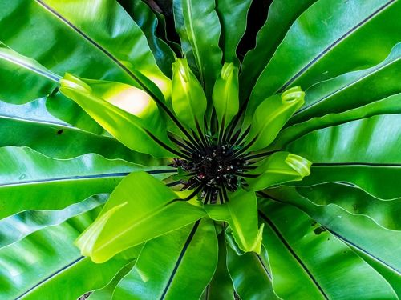

Wenn Sie nach einer Schattenliebenden schönen Zimmerpflanze suchen sind sie hier genau richtig!
Der Schwertfarn (Nephrolepis exaltata) ist eine beliebte Zimmerpflanze, die für ihre üppigen, gefiederten Blätter bekannt ist.
Er stammt aus tropischen und subtropischen Regionen und gedeiht am besten in schattigen bis halbschattigen Bereichen mit hoher Luftfeuchtigkeit.
Der Schwertfarn benötigt regelmäßige Bewässerung, wobei die Erde stets feucht, aber nicht durchnässt sein sollte.
Eine gelegentliche Düngung während der Wachstumsperiode fördert ein gesundes Wachstum. Die Pflanze kann durch Teilung der Wurzelstöcke vermehrt werden.
Üppige, gefiederte Blätter, die in einem buschigen Wuchs angeordnet sind.
Tropische und subtropische Regionen weltweit.
Schattig bis halbschattig, keine direkte Sonneneinstrahlung.
Bevorzugt hohe Luftfeuchtigkeit, idealerweise über 60%.
Regelmäßig, Erde sollte stets feucht, aber nicht durchnässt sein.
Während der Wachstumsperiode (Frühling/Sommer) alle 4-6 Wochen.
Teilung der Wurzelstöcke im Frühjahr.

Der Nestfarn (Asplenium nidus) ist eine attraktive Zimmerpflanze, die für ihre großen, glänzenden, lanzettlichen Blätter bekannt ist,
die in einer rosettenartigen Anordnung wachsen und einem Vogelnest ähneln. Er stammt aus den tropischen Regenwäldern Asiens und Australiens.
Der Nestfarn bevorzugt schattige bis halbschattige Standorte mit hoher Luftfeuchtigkeit. Die Bewässerung sollte regelmäßig erfolgen,
wobei die Erde gleichmäßig feucht gehalten werden sollte, ohne dass Staunässe entsteht. Eine gelegentliche Düngung während der Wachstumsperiode unterstützt ein gesundes Wachstum.
Die Pflanze kann durch Teilung der Rhizome vermehrt werden.
Große, glänzende, lanzettliche Blätter in rosettenartiger Anordnung.
Tropische Regenwälder Asiens und Australiens.
Schattig bis halbschattig, keine direkte Sonneneinstrahlung.
Bevorzugt hohe Luftfeuchtigkeit, idealerweise über 60%.
Regelmäßig, Erde sollte gleichmäßig feucht gehalten werden, ohne Staunässe.
Während der Wachstumsperiode (Frühling/Sommer) alle 4-6 Wochen.
Teilung der Rhizome im Frühjahr.
